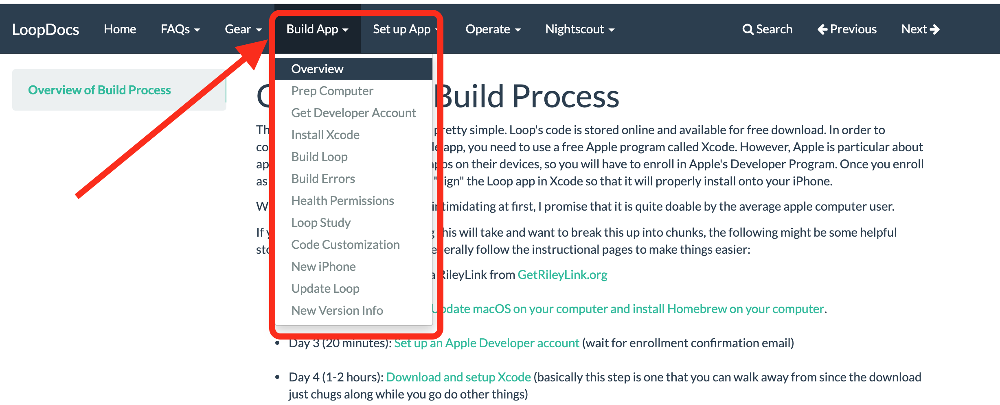

Using This Site FAQs⌁
This website is a step-by-step guide on how to build your Loop app. It is totally understandable to be intimidated and worried that this will be too technical...but please realize that this is actually as simple as reading, copying a few lines and clicking a few buttons...REALLY. And these directions will tell you exactly how to do that, and in particular how to navigate this site to make that easy.
Where do I start? I don't know what Loop is.⌁
The best thing to do is to start by learning about Loop using the FAQs pages. The short answer is that Loop is an iPhone app that helps automate your insulin delivery, based on CGM data and user inputs, to keep blood glucose within range. It requires certain gear (pump, CGM, iPhone or iPod touch, and a RileyLink) and a computer to build the app.
Click on the image below to watch a short Introduction to Loop video and then read the rest of these FAQs pages.

How do I know if I have the necessary equipment?⌁
The "Gear" category at the top of this website has an in-depth explanation for each piece of required equipment for the project. Check out each of those pages to make sure you have the needed gear. The short summary overview of gear needs is here.

But how can I actually build this? I'm confused.⌁
Now that you've verified you have the gear...the "Build" section of the docs is for you.

This looks so hard. I don't know if I can do it!⌁
That isn't a question, but I do have an answer. ;) Building Loop app is actually really quite simple. There are a lot of pages only because they are laid out into short groups of tasks so that you can navigate more easily and take breaks if you want.
- Each page is designed to end at a natural stopping or resting point, in case you get interrupted or want to take a break.
- Some of the pages only take 5 minutes to finish...so don't be intimidated just by the number of pages.
- The pages are listed in the order that you'd do each task. So think of each page as ordered steps; where step 1 is prepping the computer.
- Each build page ends with a "next step" link to guide you to the next steps you'll need to do. Just keep swimming onto the next little step or take a break and come back later.
One step at a time...
Don't look at the whole build process at once...that's overwhelming. Instead view it as several smaller tasks to be accomplished and work one step at a time. Start at the "Prep Computer" and just read slowly and follow the screenshots. Don't skip steps or skip paragraphs.
What if I get stuck?⌁
If you get stuck, there's several things that can help:
- Scroll back up in the directions and see if you maybe missed a step accidentally. Might even be that you missed a paragraph.
- Check and compare your screen's display with what the screenshots are highlighting. Do you see similar? Or does your's have a error message? If you have an error message, see if it helps guide you to the problem.
- If you just get stumped, post in Looped Group (Facebook) or Zulipchat and ask for help. Lots of people standing by to help each other. If you have a screenshot of where you are stuck and what part of the directions you are on, that will help a lot.
So, I build the app and then I'm done?⌁
Nope...we wouldn't just leave you dangling like that. There's also an important walk-thru for how to setup your app for the first time. The new displays and settings are all explained in the "Set up App" section of this website. Check it out and follow along with each page step-by-step, just like you did for building. This way you'll learn valuable tips along the way, too. Do similar for the "Operate" section of these docs...those are very helpful for understand how you will use the app to enter meals, edit entries, bolus, etc.

THIS IS AMAZING?! How can I give back??⌁
The best way to say thank you is to read up (and enroll if you so desire) about the Loop Observational Study. Of note: The study is only for USA currently...but I still love you if you are outside the USA.
Another way? Answer questions on Zulipchat and in Looped group. Help others who are following in your footsteps.